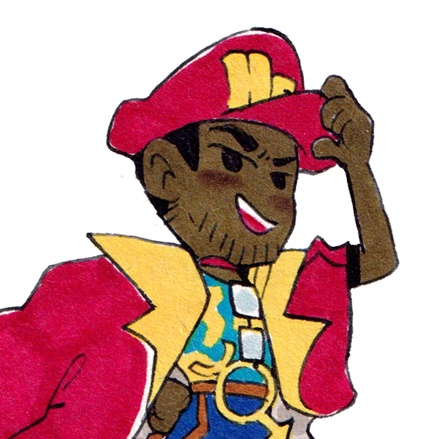

<style>
	main {
		margin-top: 15vh;
		width: 100vw;
		display: flex;
		flex-direction: row;
		justify-content: center;
		margin-left: auto;
		margin-right: auto;
	}
	.navbar {
		padding-right: 1.5rem;
		padding-top: 16px;
		display: flex;
		flex-wrap: wrap;
		flex-direction: column;
		text-align: right;
	}
	.navbar a {
		margin-bottom: 0.5rem;
	}
	.content-wrapper {
		max-width: 800px;
		width: 60vw;
		min-width: 320px;
		display: flex;
		flex-wrap: wrap;
		flex-direction: column;
	}
	.content-wrapper.blog {
		width: 80vw;
		max-width: 1200px;
	}
	div > span {
		display: flex;
		flex-direction: column;
		align-items: center;
		justify-content: center;
		padding-bottom: 8px;
	}
	.footer-links {
		margin-top: 8px;
		display: flex;
		flex-direction: column;
		justify-content: center;
		align-items: center;
	}

	@media only screen and (max-width: 600px) {
		main {
			flex-direction: column;
			margin-top: min(5vh, 30px);
			margin-left: min(5vw, 60px);
		}
		.navbar {
			flex-direction: row;
			text-align: left;
			justify-content: center;
		}
		.content-wrapper {
			width: 90vw;
		}
		.navbar a {
			margin-right: 12px;
		}
	}

</style><!doctype html><html lang="en"><head><meta charset="UTF-8"><meta name="viewport" content="width=device-width, initial-scale=1.0"><meta http-equiv="X-UA-Compatible" content="ie=edge"><link rel="stylesheet" href="../css/reset.css"><link rel="stylesheet" href="../css/main.css"><link rel="stylesheet" href="../css/font.css"><link rel="stylesheet" href="../css/code.css"></head><main><nav class=" navbar"><a class="" href="/">~</a> <a href="/about/">about</a> <a href="/resume/">hire me 😳</a> <a href="/projects/">projects</a> <a class="" href="/mail/">mail list</a> <a href="/blog/">blog</a> <a id="theme" onclick="change_theme()">theme</a></nav><div class=" content-wrapper"><span>+-------------+</span><style>

.about-img {
    height: 20vw;
    max-height: 250px;
    min-height: 150px;
    width: fit-content;

}
</style><title>About</title><meta property="og:title" content="About"><h1>~/about_me </h1><br><a class="source" href="https://www.instagram.com/apple_toast/?hl=en" target="_blank">mercury man commission by @apple_toast</a><br><br><p>I'm Jayden, a student at York University. Among other things, I like to read and write computer code.</p><p>I've founded <a href="https://gdyu.itch.io/">York's game development club</a> and have professional internship experience at companies like Scotiabank and Google. You can find my resume (see my <a href="resume/">here.</a>)</p><p>I've been in love with programming and creating with computers since modifying old Nintendo games and consoles with fan-made hacking tools (don't look for my old starmen.net account, my Earthbound hacks were very bad).</p><p>I'm a big beliver in the value of quality software, and developing a holistic understanding of the systems we use to build software. Abstraction should be intentional and deliberate, not simply the default.</p><h2>A Short list of programmers who inspire me</h2><ul><li><a href="https://100r.co/site/home.html">100 Rabits Collective</a></li><li><a href="https://stuffwithstuff.com/">Bob Nystrom</a></li><li><a href="https://www.gingerbill.org/">Bill Hall</a></li><li><a href="https://caseymuratori.com/">Casey Muratori</a></li><li><a href="https://isadorasophia.com/about/">Isadora Sophia</a></li><li><a href="https://www.youtube.com/@jvscholz">James Scholz</a></li><li><a href="https://www.nicbarker.com/">Nic Barker</a></li><li><a href="https://noelberry.ca/">Noel Berry</a></li></ul><h1>What I'm up to right now: </h1><hr>
<p><a href="https://youtu.be/jnw7Hi6iIKE?si=kn4Kpw0CY4EsCGQQ">Niño Preparate type shii</a></p>
<h1>Happy 2026!</h1>
<p>(Imagine this post came out 20 days earlier than it did)!</p>
<p>This will be my final semester at York, still uncertain about plans after graduation, If you're the hiring kind of type, hmu, I do Web Dev mostly but also DevOps and Game dev I guess.</p>
<p>My goal this season is to be nicer to myself. Kinder. More compassionate. I'm generally pretty self-critical, And I've been feeling especially un-confident these days. I want to learn how to balance discipline and consistentcy with giving myself grace and compassion, the ability to be willing to not be hard on myself for not being perfect.</p>
<p>I'm only taking 2 classes this term, so most of my time will be spent with personal work and a bit of contract stuff on the side. I've also resumed studying Kanji + Vocab with Wanikani, I've been procrastinating with grammar but I'll have to hop back on that too. Planning on FINALLY going to Japan in May (probably).</p>
<p>If you're wondering what happened to that Roguelike I spent all summer working on, well it's on hiatus (I know, cancelled video game projects, how novel). I ran into a lot of specific game design problems I didn't have good answers for, but more importantly I think the fundamental concept of the game itself was interesting, but it wasn't fun. If I reach an epiphany on how to make it really good I'll be sure to resume working on it, but for now I'm shelving it and exploring other ideas.</p>
<p>I've been getting into making programming languages. Being able to implement a Compiler + Interpreter/VM feels like great metric to judge if you're no longer a &quot;beginner&quot; programmer. I've been thinking of other similar programmer &quot;merit badges&quot; but I'm not smart enough to be able to discuss what those could be yet.</p>
<p>I've already gone through <a href="https://craftinginterpreters.com/">Crafting Interpreter's</a> jlox language, but I used Java and found myself blindly copying the code to try to finish the implementation so I could put it on my resume 💀. I also ignored all of the challenges presented. So I plan on going over jlox again in C#, and clox for the first time in Go.</p>
<p>I also will probably make some games? If you count the my failed entry to the <a href="https://toronto.ubisoft.com/next/">Ubisoft NEXT</a> engine programming competition then I already have this year, Feburary is a good time for jams, with <a href="https://itch.io/jam/brackeys-15">a lot of</a> <a href="https://itch.io/jam/metroidvania-month-31-magical-girl-game-jam-13">very participatable</a> <a href="https://itch.io/jam/7drl-challenge-2026">ones</a> <a href="https://itch.io/jam/bigmode-game-jam-2026">taking place.</a> <a href="https://itch.io/jam/dreamdisc-25">Dreamdisc Jam</a> also caught my eye but I might have some healing to do with C++ after being subjected to the Horrors of Visual Studio.</p>
<p>Finally, two large blog posts should be coming this season, one a dissertation on thoughts about JRPGs, which I started writing after I had finished Expedition 33 and am finally editing and releasing, And the other on my experience with the Ubisoft NEXT competition this year.</p>
<p>I hope all is well with whoever is reading, Thank you once again for your time and attention.</p>
<h4>personal update archive </h4><ul><li><a class="blog-title" href="/blog/2025/09/02/jayden-journal-public-access-fall-2025">Jayden Journal Public Access: Fall 2025</a></li><li><a class="blog-title" href="/blog/2025/05/09/jayden-journal-public-access-summer-2025">Jayden Journal Public Access: Summer 2025</a></li><li><a class="blog-title" href="/blog/2024/12/26/jayden-journal-public-access-winter-2025">Jayden Journal Public Access: Winter 2025</a></li><li><a class="blog-title" href="/blog/2024/08/22/jayden-journal-public-access-fall-2024">Jayden Journal Public Access: Fall 2024</a></li><li><a class="blog-title" href="/blog/2024/05/22/jayden-journal-public-access-google-gaiden-summer-2024">Jayden Journal Public Access: Google Gaiden (Summer 2024)</a></li><li><a class="blog-title" href="/blog/2024/03/01/jayden-journal-public-access-spring-2024">Jayden Journal Public Access: Spring 2024</a></li><li><a class="blog-title" href="/blog/2023/12/02/jayden-journal-public-access-winter-2024">Jayden Journal Public Access: Winter 2024</a></li></ul><footer class="footer-links"><span>+-------------+</span><div><a href="https://github.com/JUB-Yoush/mywebsite">site source</a> <a class="" href="/contact">contact</a> <a class="" href="https://github.com/JUB-Yoush" target="_blank">github</a> <a class="" href="https://yoush.itch.io/" target="_blank">itch.io</a> <a class="" href="/rss.xml">rss</a></div><div style="display: flex; align-items: center; gap: 8px; padding-top: 16px;"><a href="https://webring.jaydenpb.net/#jaydenpb.net?nav=prev">←</a> <a href="https://webring.jaydenpb.net" target="_blank"><div style="border: 1px solid black;
					display: flex; flex-direction: row;  
						"><p style="max-width: 50px; font-size: 16px; font-family:monospace;">TOR GDC RING</p></div></a> <a href="https://webring.jaydenpb.net/#jaydenpb.net?nav=next">→</a></div><div></div></footer></div></main><script src="../js/theme.js"></script></html>